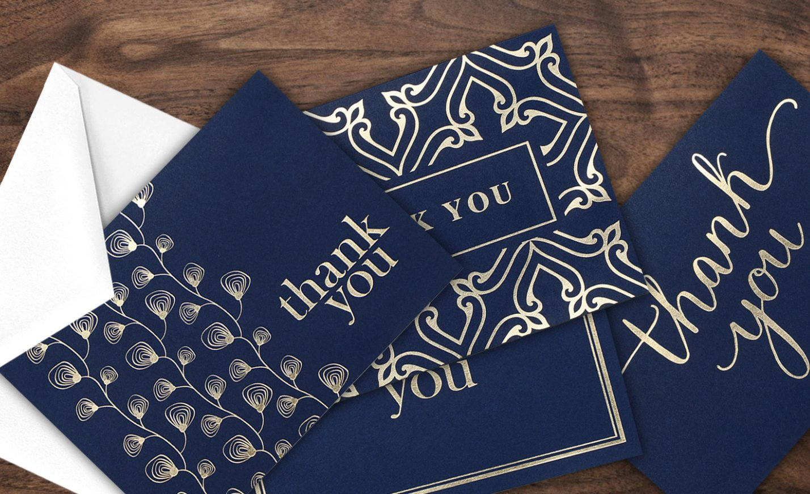
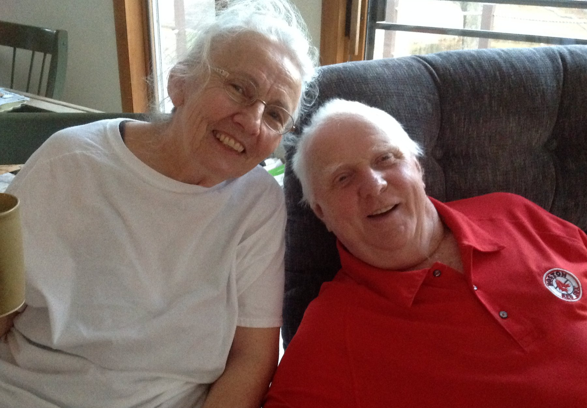
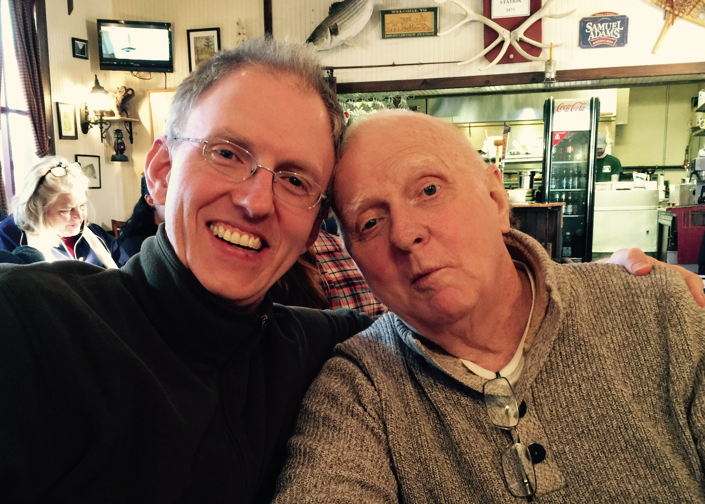
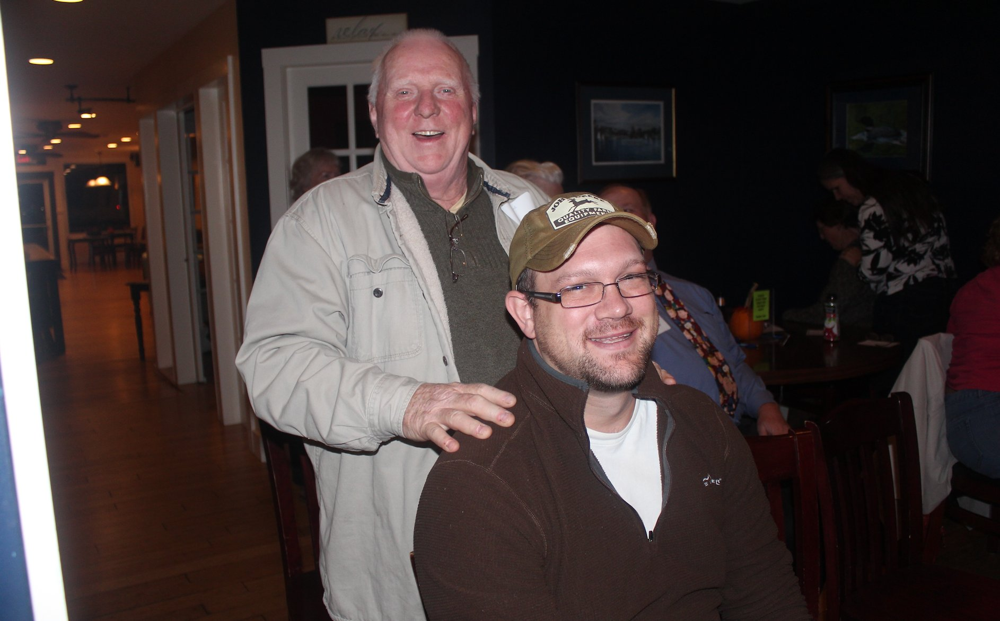
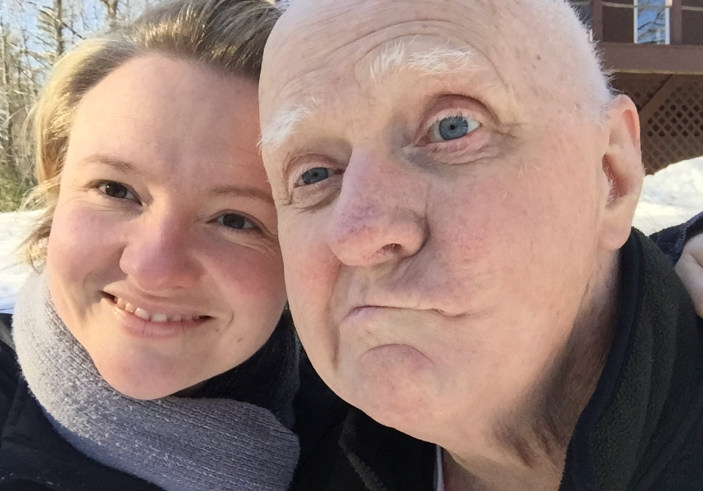
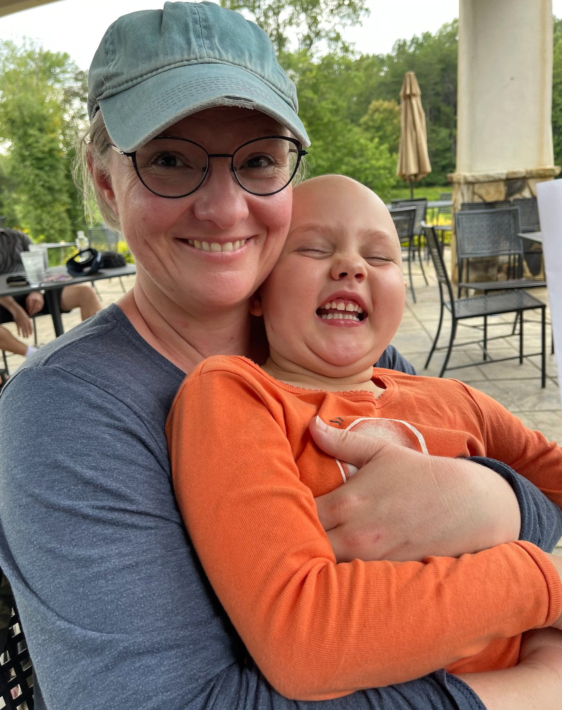
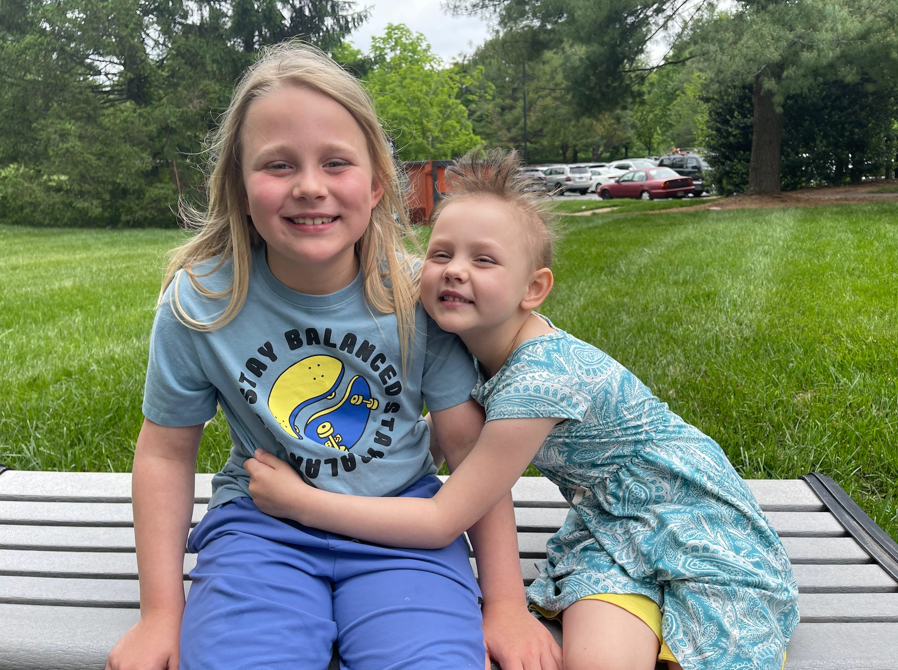
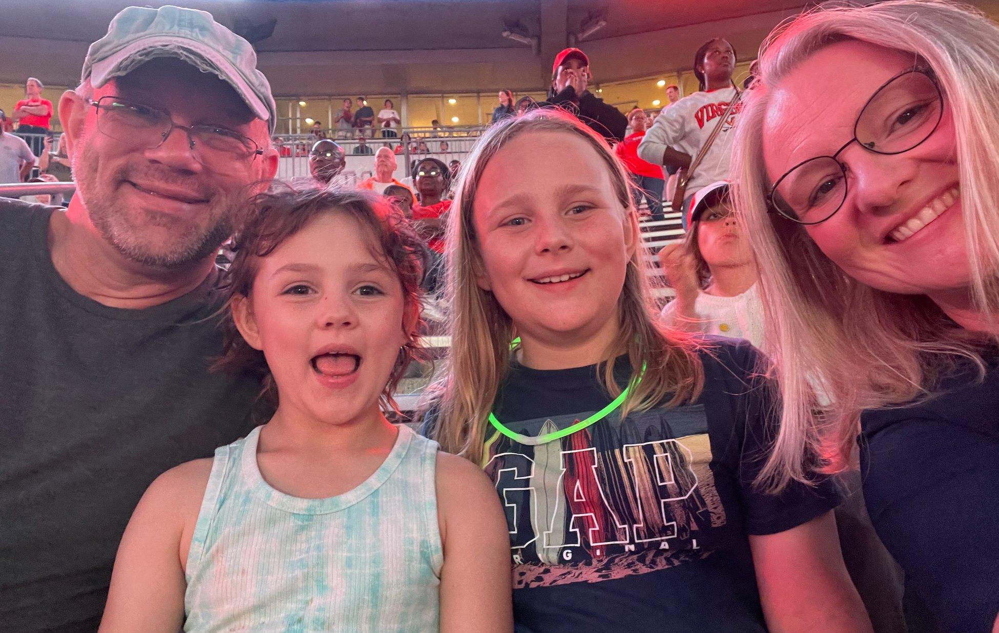

A life built
all the way through.
She doesn't speak about resilience from a distance. She speaks from inside it.
The thread from the Snack Shack at ten to every stage she walks onto is the same: connection first. Always.
This was the 1980s. Homeschooling was not a lifestyle choice, it was a radical act. Strangers stopped Barbra and her brother in grocery stores to quiz them on multiplication tables. Their mother did it anyway, without support, without community, without a roadmap. It worked. Barbra's brother became a Fulbright scholar and tenured math professor at Siena College.
Barbra, wanting friends, built a 6-by-6-foot snack stand in her front yard, hired neighborhood kids, paid them in one-cent Tootsie Rolls to deliver flyers, and got $300 from her dad at Sam's Club. By end of summer she had purchased a trampoline for the whole neighborhood. Every child had to sign a waiver before jumping.
At 13, she decided she wanted to pitch softball. No coach. No instruction. She practiced alone in the backyard, four hours a day, until she could throw 67 mph. The reason: to surprise her father. Her team won the New Hampshire State Championship that year. This is simply who she is. She identifies what she wants, she builds the path herself, and she does it for the people she loves.
At 16, Barbra navigated her own high school graduation through Oak Meadow and took the SATs, the first standardized tests she had ever taken in her life, and was accepted to the University of New Hampshire. At 17, as a summer intern, she walked into Southern New Hampshire Medical Center and reengineered three departments, eliminated redundancies, and prepared the organization for enterprise Cactus credentialing software implementation. In twelve weeks.
In 2004, the Boston Red Sox won the World Series for the first time in 86 years. Barbra made something that captured the cultural moment, the Red Sox Last Supper. It went viral before viral was a word. Sports Illustrated featured it. It appeared on the wall of Johnny Damon's house on MTV Cribs — the actual painting, on national television, in one of the most famous athlete homes of that era.

After her marriage ended in 2009, Barbra moved home to support her mother in caring for her 97-year-old grandfather, and walked him through hospice too. She took classes at the University of New Hampshire, created and taught marketing courses at local economic development chambers to five-star reviews, and founded SparkEvolution, a content marketing consulting company. All simultaneously.
During that same season, she applied to a prestigious nursing program that accepts 24 students out of more than 400 applicants. She got in. But she had made herself a promise: if she landed a client first, that would be the universe telling her which way to go. If she didn't, she would go to nursing school. She landed a client two weeks before the acceptance letter arrived. She chose to build.
This is not a chapter about survival. It is the first evidence of a pattern: Barbra builds through hard things. And she has always known how to listen for the answer.
SparkEvolution's defining client was PureFlix, a faith-based streaming platform now owned by Sony. Barbra built and managed their entire content marketing operation, growing PureFlix into HubSpot's largest client contact database at the time, with over 7 million contacts. The former CEO of PureFlix remains a personal friend.
In 2013, Barbra was organizing a TED talk in Wolfeboro, New Hampshire. Not attending. Organizing. Running the room. Creating the conditions for ideas to land. A man named Kurt Milligan walked through the door.
They were two people who believed in the same things: that ideas matter, that building something real is one of the most alive ways to spend a life, that the future belongs to people willing to figure it out before anyone else does. They fell in love the way people do when they find someone who makes them more curious, more ambitious, and more themselves. All at once.
What followed was not a quiet life. It was a life of possibility pursued on purpose. Oliver in 2015. Eliza in 2019. A multimillion dollar business built between nap times. A daughter's diagnosis navigated together. A new company designed from the ground up. Not just as a product, but as a declaration: we are not done building.
With a toddler at home and a second baby on the way, Barbra reverse-engineered consumer buying data and customer reviews to find a gap in a market dominated by giants. She built a product, launched it on Amazon, and by 2019 had created a multimillion dollar business that was significantly outselling both Hallmark and American Greetings in their own category. Then she exited, acquired by Boosted Commerce, an Amazon FBA aggregator. The same year Eliza was born.

In December 2020, Barbra's mother broke her leg, while her father Paul was already in hospice care. Both parents. At the same time. During a pandemic that had dismantled every reliable system of support.

Home care agencies had not yet implemented adequate COVID screening standards. So Barbra did what she has always done when the system isn't there: she built one. She personally vetted individual caregivers, established screening protocols, coordinated care across two parents with different and urgent needs, and set up and managed reimbursement through their Long Term Care Insurance, while raising a one-year-old and a five-year-old, and trying to hold her own family together through a pandemic that left everyone without a roadmap. Her brother was beside her. He handled the hands-on physical care their parents needed every day. Two siblings, each doing what the situation demanded.

And then there was Kurt. When Barbra needed to be with her children at night, Kurt stepped in as Bubba's hands-on caregiver. He took on the most intimate tasks that hospice requires, the ones only those who have been through it would understand. He didn't flinch. He didn't hesitate. He and Bubba became close in those final months in a way neither of them could have anticipated. During the days, Kurt held down the home, caring for Ollie and Eliza so Barbra could be fully present for her parents.


Bubba passed in 2021. In his final days, he had leaned close and whispered to Barbra: "You found a great guy, keep him." She kept him. Through all of it, Barbra and her friend Norma Rapko raised $250,000 to support women business owners who were losing everything in the pandemic. Most people go inward during crisis. Barbra went outward.
In August 2023, while Eliza's diagnosis was still months away. Kurt's brother Aaron was diagnosed with terminal brain cancer. But something had already happened, quietly, in those final months with Bubba: Kurt had learned something that cannot be taught any other way. He knew how to be present with someone dying. He knew how to make them laugh. He knew how to do the hardest things without making them feel hard. When Aaron needed that same care, Kurt already knew how to give it. Aaron died in May 2025. He was not just Kurt's brother. He was one of his closest friends. The loss was devastating.



In January 2024, her daughter Eliza was diagnosed with cancer. Barbra used AI to research treatment protocols, understand medical complexity she had no training for, organize the overwhelming logistics of ongoing care, and stay present for her son Ollie, who held his sister's hand through all of it. She is not a medical professional. She is a mother who refused to be helpless.
Most people would have been undone by any one of these things. She didn't just survive it. She organized it. Her husband made sure she never had to face any of it alone.
Barbra has always had a high locus of control. It is the deep conviction that her decisions shape her outcomes. It is the thread running through every chapter of her life. The snack stand. The nursing school decision. The client before the letter. The caregiving system built from scratch. The Amazon exit. She has always believed, with her whole self, that how she responds to circumstances matters enormously.
Eliza's diagnosis cracked something open in that belief. Not broke it. Cracked it open. There are things you cannot system your way through. There are moments where the only available move is to slow down, surrender the need to control the outcome, and become so attentive to the details of the present moment that nothing important slips past you. Barbra learned that surrender is not the opposite of agency. It is a more sophisticated form of it.
Faith has been the container that made that surrender possible. Not as doctrine. As foundation. The understanding that creation and trust can coexist. That there is something larger than the systems she builds, something that holds what she cannot. That has been as essential to weathering these years as anything else she has built or learned or organized.
Their AI platform is called Oliza, a blend of Ollie and Eliza's names. Diagnosed in January 2024. Eliza rings the bell in May 2026. Every company Barbra has built, every stage she walks onto, every talk she gives, it is all for them. That is not a tagline. That is the whole story.